2023 Higher Chemistry - Paper 2 marking instructions
Source: Scottish Qualifications Authority (SQA) / Qualifications Scotland. This is a StemInteract HTML companion, not an official HTML edition. Selectable text is supplied alongside original page images. Use the images or original PDF for equations, powers, fractions, vector notation, tables and diagrams; text extraction cannot fully preserve mathematical layout.
Jump to a question
PDF page 1
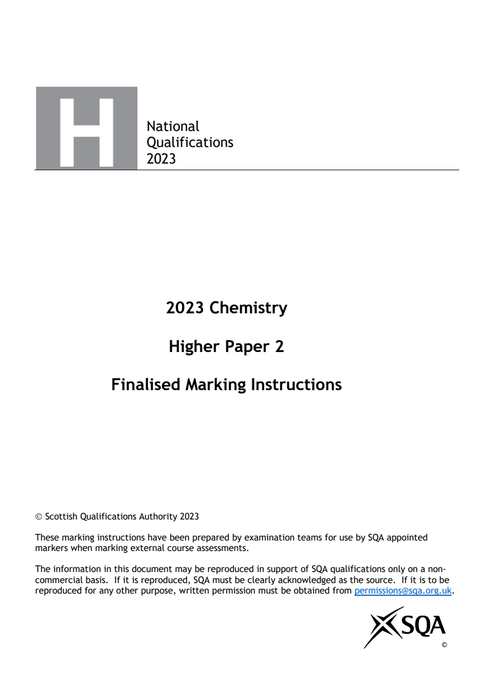
Selectable page text
National
Qualifications
2023
2023 Chemistry
Higher Paper 2
Finalised Marking Instructions
Scottish Qualifications Authority 2023
These marking instructions have been prepared by examination teams for use by SQA appointed
markers when marking external course assessments.
The information in this document may be reproduced in support of SQA qualifications only on a non-
commercial basis. If it is reproduced, SQA must be clearly acknowledged as the source. If it is to be
reproduced for any other purpose, written permission must be obtained from permissions@sqa.org.uk.
©PDF page 2
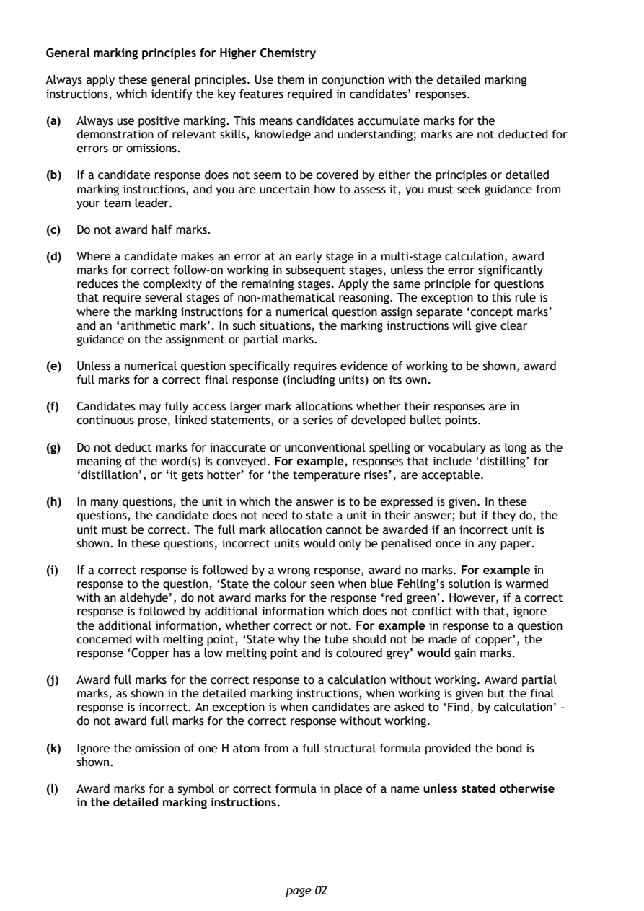
Selectable page text
General marking principles for Higher Chemistry
Always apply these general principles. Use them in conjunction with the detailed marking
instructions, which identify the key features required in candidates’ responses.
(a) Always use positive marking. This means candidates accumulate marks for the
demonstration of relevant skills, knowledge and understanding; marks are not deducted for
errors or omissions.
(b) If a candidate response does not seem to be covered by either the principles or detailed
marking instructions, and you are uncertain how to assess it, you must seek guidance from
your team leader.
(c) Do not award half marks.
(d) Where a candidate makes an error at an early stage in a multi-stage calculation, award
marks for correct follow-on working in subsequent stages, unless the error significantly
reduces the complexity of the remaining stages. Apply the same principle for questions
that require several stages of non-mathematical reasoning. The exception to this rule is
where the marking instructions for a numerical question assign separate ‘concept marks’
and an ‘arithmetic mark’. In such situations, the marking instructions will give clear
guidance on the assignment or partial marks.
(e) Unless a numerical question specifically requires evidence of working to be shown, award
full marks for a correct final response (including units) on its own.
(f) Candidates may fully access larger mark allocations whether their responses are in
continuous prose, linked statements, or a series of developed bullet points.
(g) Do not deduct marks for inaccurate or unconventional spelling or vocabulary as long as the
meaning of the word(s) is conveyed. For example, responses that include ‘distilling’ for
‘distillation’, or ‘it gets hotter’ for ‘the temperature rises’, are acceptable.
(h) In many questions, the unit in which the answer is to be expressed is given. In these
questions, the candidate does not need to state a unit in their answer; but if they do, the
unit must be correct. The full mark allocation cannot be awarded if an incorrect unit is
shown. In these questions, incorrect units would only be penalised once in any paper.
(i) If a correct response is followed by a wrong response, award no marks. For example in
response to the question, ‘State the colour seen when blue Fehling’s solution is warmed
with an aldehyde’, do not award marks for the response ‘red green’. However, if a correct
response is followed by additional information which does not conflict with that, ignore
the additional information, whether correct or not. For example in response to a question
concerned with melting point, ‘State why the tube should not be made of copper’, the
response ‘Copper has a low melting point and is coloured grey’ would gain marks.
(j) Award full marks for the correct response to a calculation without working. Award partial
marks, as shown in the detailed marking instructions, when working is given but the final
response is incorrect. An exception is when candidates are asked to ‘Find, by calculation’ -
do not award full marks for the correct response without working.
(k) Ignore the omission of one H atom from a full structural formula provided the bond is
shown.
(l) Award marks for a symbol or correct formula in place of a name unless stated otherwise
in the detailed marking instructions.
page 02PDF page 3
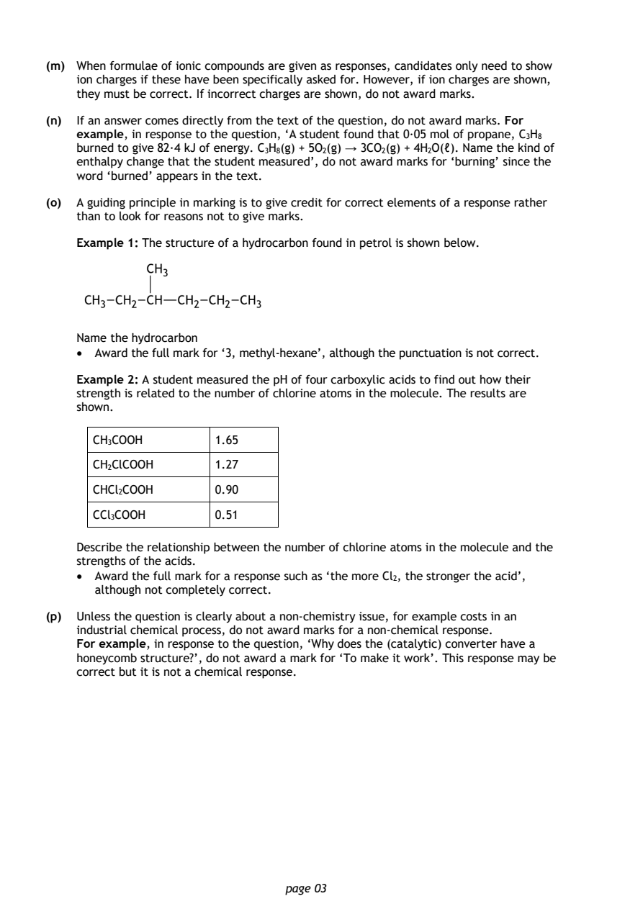
Selectable page text
(m) When formulae of ionic compounds are given as responses, candidates only need to show
ion charges if these have been specifically asked for. However, if ion charges are shown,
they must be correct. If incorrect charges are shown, do not award marks.
(n) If an answer comes directly from the text of the question, do not award marks. For
example, in response to the question, ‘A student found that 0·05 mol of propane, C₃H₈
burned to give 82·4 kJ of energy. C₃H₈(g) + 5O₂(g) → 3CO₂(g) + 4H₂O(ℓ). Name the kind of
enthalpy change that the student measured’, do not award marks for ‘burning’ since the
word ‘burned’ appears in the text.
(o) A guiding principle in marking is to give credit for correct elements of a response rather
than to look for reasons not to give marks.
Example 1: The structure of a hydrocarbon found in petrol is shown below.
Name the hydrocarbon
• Award the full mark for ‘3, methyl-hexane’, although the punctuation is not correct.
Example 2: A student measured the pH of four carboxylic acids to find out how their
strength is related to the number of chlorine atoms in the molecule. The results are
shown.
CH₃COOH 1.65
CH₂ClCOOH 1.27
CHCl₂COOH 0.90
CCl₃COOH 0.51
Describe the relationship between the number of chlorine atoms in the molecule and the
strengths of the acids.
• Award the full mark for a response such as ‘the more Cl₂, the stronger the acid’,
although not completely correct.
(p) Unless the question is clearly about a non-chemistry issue, for example costs in an
industrial chemical process, do not award marks for a non-chemical response.
For example, in response to the question, ‘Why does the (catalytic) converter have a
honeycomb structure?’, do not award a mark for ‘To make it work’. This response may be
correct but it is not a chemical response.
page 03PDF page 4
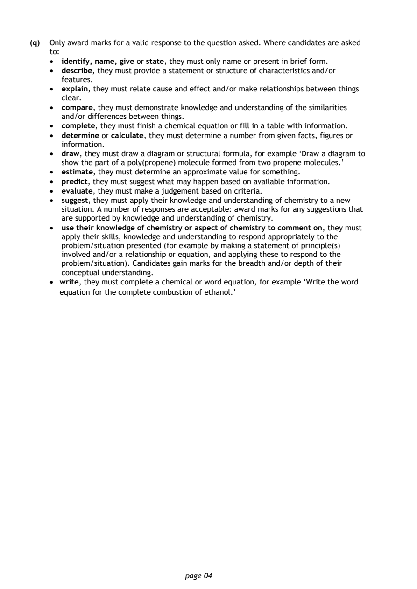
Selectable page text
(q) Only award marks for a valid response to the question asked. Where candidates are asked
to:
• identify, name, give or state, they must only name or present in brief form.
• describe, they must provide a statement or structure of characteristics and/or
features.
• explain, they must relate cause and effect and/or make relationships between things
clear.
• compare, they must demonstrate knowledge and understanding of the similarities
and/or differences between things.
• complete, they must finish a chemical equation or fill in a table with information.
• determine or calculate, they must determine a number from given facts, figures or
information.
• draw, they must draw a diagram or structural formula, for example ‘Draw a diagram to
show the part of a poly(propene) molecule formed from two propene molecules.’
• estimate, they must determine an approximate value for something.
• predict, they must suggest what may happen based on available information.
• evaluate, they must make a judgement based on criteria.
• suggest, they must apply their knowledge and understanding of chemistry to a new
situation. A number of responses are acceptable: award marks for any suggestions that
are supported by knowledge and understanding of chemistry.
• use their knowledge of chemistry or aspect of chemistry to comment on, they must
apply their skills, knowledge and understanding to respond appropriately to the
problem/situation presented (for example by making a statement of principle(s)
involved and/or a relationship or equation, and applying these to respond to the
problem/situation). Candidates gain marks for the breadth and/or depth of their
conceptual understanding.
• write, they must complete a chemical or word equation, for example ‘Write the word
equation for the complete combustion of ethanol.’
page 04PDF page 5
Paper 2, Question 1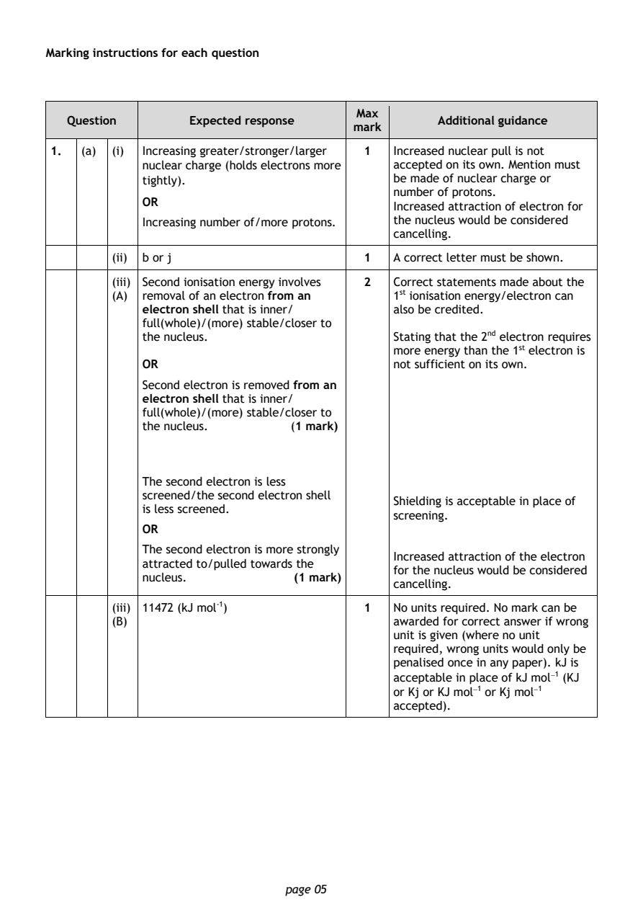
Selectable page text
Marking instructions for each question
Max
Question Expected response Additional guidance
mark
1. (a) (i) Increasing greater/stronger/larger 1 Increased nuclear pull is not
nuclear charge (holds electrons more accepted on its own. Mention must
tightly). be made of nuclear charge or
number of protons.
OR
Increased attraction of electron for
Increasing number of/more protons. the nucleus would be considered
cancelling.
(ii) b or j 1 A correct letter must be shown.
(iii) Second ionisation energy involves 2 Correct statements made about the
(A) removal of an electron from an 1^{s}^{t} ionisation energy/electron can
electron shell that is inner/ also be credited.
full(whole)/(more) stable/closer to
the nucleus. Stating that the 2ⁿ^{d} electron requires
more energy than the 1^{s}^{t} electron is
OR not sufficient on its own.
Second electron is removed from an
electron shell that is inner/
full(whole)/(more) stable/closer to
the nucleus. (1 mark)
The second electron is less
screened/the second electron shell
Shielding is acceptable in place of
is less screened.
screening.
OR
The second electron is more strongly
Increased attraction of the electron
attracted to/pulled towards the
for the nucleus would be considered
nucleus. (1 mark)
cancelling.
(iii) 11472 (kJ mol⁻¹) 1 No units required. No mark can be
(B) awarded for correct answer if wrong
unit is given (where no unit
required, wrong units would only be
penalised once in any paper). kJ is
acceptable in place of kJ mol⁻¹ (KJ
or Kj or KJ mol⁻¹ or Kj mol⁻¹
accepted).
page 05PDF page 6
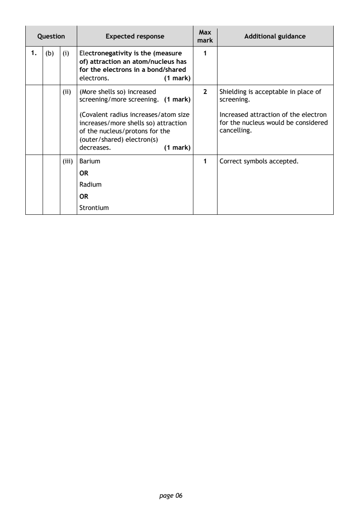
Selectable page text
Max
Question Expected response Additional guidance
mark
1. (b) (i) Electronegativity is the (measure 1
of) attraction an atom/nucleus has
for the electrons in a bond/shared
electrons. (1 mark)
(ii) (More shells so) increased 2 Shielding is acceptable in place of
screening/more screening. (1 mark) screening.
(Covalent radius increases/atom size Increased attraction of the electron
increases/more shells so) attraction for the nucleus would be considered
of the nucleus/protons for the cancelling.
(outer/shared) electron(s)
decreases. (1 mark)
(iii) Barium 1 Correct symbols accepted.
OR
Radium
OR
Strontium
page 06PDF page 7
Paper 2, Question 2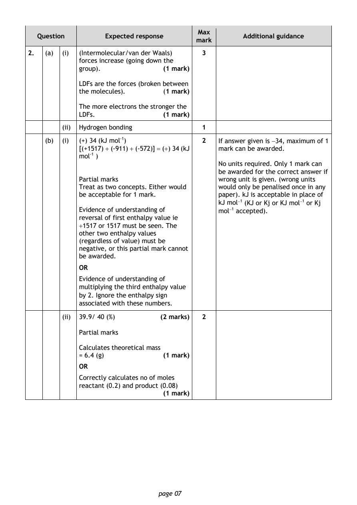
Selectable page text
Max
Question Expected response Additional guidance
mark
2. (a) (i) (Intermolecular/van der Waals) 3
forces increase (going down the
group). (1 mark)
LDFs are the forces (broken between
the molecules). (1 mark)
The more electrons the stronger the
LDFs. (1 mark)
(ii) Hydrogen bonding 1
(b) (i) (+) 34 (kJ mol⁻¹) 2 If answer given is −34, maximum of 1
[(+1517) + (-911) + (-572)] = (+) 34 (kJ mark can be awarded.
mol⁻¹ )
No units required. Only 1 mark can
be awarded for the correct answer if
Partial marks wrong unit is given. (wrong units
Treat as two concepts. Either would would only be penalised once in any
be acceptable for 1 mark. paper). kJ is acceptable in place of
kJ mol⁻¹ (KJ or Kj or KJ mol⁻¹ or Kj
Evidence of understanding of mol⁻¹ accepted).
reversal of first enthalpy value ie
+1517 or 1517 must be seen. The
other two enthalpy values
(regardless of value) must be
negative, or this partial mark cannot
be awarded.
OR
Evidence of understanding of
multiplying the third enthalpy value
by 2. Ignore the enthalpy sign
associated with these numbers.
(ii) 39.9/ 40 (%) (2 marks) 2
Partial marks
Calculates theoretical mass
= 6.4 (g) (1 mark)
OR
Correctly calculates no of moles
reactant (0.2) and product (0.08)
(1 mark)
page 07PDF page 8
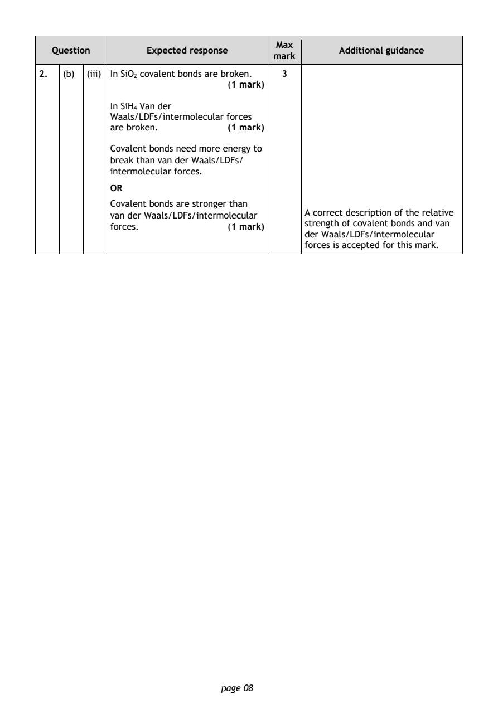
Selectable page text
Max
Question Expected response Additional guidance
mark
2. (b) (iii) In SiO₂ covalent bonds are broken. 3
(1 mark)
In SiH₄ Van der
Waals/LDFs/intermolecular forces
are broken. (1 mark)
Covalent bonds need more energy to
break than van der Waals/LDFs/
intermolecular forces.
OR
Covalent bonds are stronger than
van der Waals/LDFs/intermolecular A correct description of the relative
strength of covalent bonds and van
forces. (1 mark)
der Waals/LDFs/intermolecular
forces is accepted for this mark.
page 08PDF page 9
Paper 2, Question 3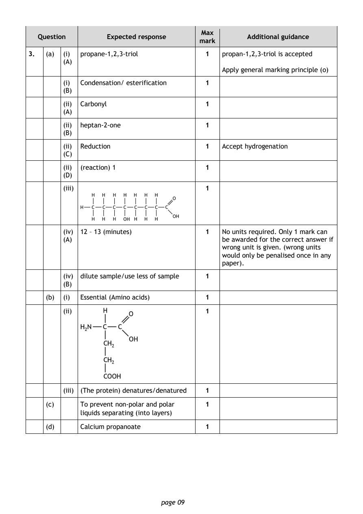
Selectable page text
Max
Question Expected response Additional guidance
mark
3. (a) (i) propane-1,2,3-triol 1 propan-1,2,3-triol is accepted
(A)
Apply general marking principle (o)
(i) Condensation/ esterification 1
(B)
(ii) Carbonyl 1
(A)
(ii) heptan-2-one 1
(B)
(ii) Reduction 1 Accept hydrogenation
(C)
(ii) (reaction) 1 1
(D)
(iii) 1
(iv) 12 – 13 (minutes) 1 No units required. Only 1 mark can
(A) be awarded for the correct answer if
wrong unit is given. (wrong units
would only be penalised once in any
paper).
(iv) dilute sample/use less of sample 1
(B)
(b) (i) Essential (Amino acids) 1
(ii) 1
(iii) (The protein) denatures/denatured 1
(c) To prevent non-polar and polar 1
liquids separating (into layers)
(d) Calcium propanoate 1
page 09PDF page 10
Paper 2, Question 4Selectable page text
Max
Question Expected response Additional guidance
mark
4. Award 1 mark where the candidate 3
has demonstrated, at an appropriate
level, a limited understanding of the
chemistry involved. They have made
some statement(s) which are
relevant to the situation, showing
that they have understood at least a
little of the chemistry within the
problem.
Award 2 marks where the candidate
has demonstrated, at an appropriate
level, a reasonable understanding of
the chemistry involved. They make
some statement(s) which are
relevant to the situation, showing
that they have understood the
problem.
Award 3 marks where the candidate
has demonstrated, at an appropriate
level, a good understanding of the
chemistry involved. They show a
good comprehension of the
chemistry of the situation and
provide a logically correct answer to
the question posed. This type of
response might include a statement
of the principles involved, a
relationship or an equation, and the
application of these to respond to
the problem. The answer does not
need to be ‘excellent’ or ‘complete’
for the candidate to gain full marks.
Award 0 marks where the candidate
has not demonstrated, at an
appropriate level, an understanding
of the chemistry involved. There is
no evidence that they have
recognised the area of chemistry
involved, or they have not given any
statement of a relevant chemistry
principle. Award this mark also if the
candidate merely restates the
chemistry given in the question.
page 10PDF page 11
Paper 2, Question 5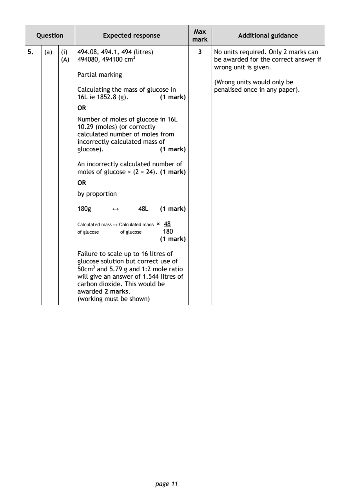
Selectable page text
Max
Question Expected response Additional guidance
mark
5. (a) (i) 494.08, 494.1, 494 (litres) 3 No units required. Only 2 marks can
(A) 494080, 494100 cm³ be awarded for the correct answer if
wrong unit is given.
Partial marking
(Wrong units would only be
Calculating the mass of glucose in penalised once in any paper).
16L ie 1852.8 (g). (1 mark)
OR
Number of moles of glucose in 16L
10.29 (moles) (or correctly
calculated number of moles from
incorrectly calculated mass of
glucose). (1 mark)
An incorrectly calculated number of
moles of glucose × (2 × 24). (1 mark)
OR
by proportion
180g ↔ 48L (1 mark)
Calculated mass ↔ Calculated mass × 48
of glucose of glucose 180
(1 mark)
Failure to scale up to 16 litres of
glucose solution but correct use of
50cm³ and 5.79 g and 1:2 mole ratio
will give an answer of 1.544 litres of
carbon dioxide. This would be
awarded 2 marks.
(working must be shown)
page 11PDF page 12
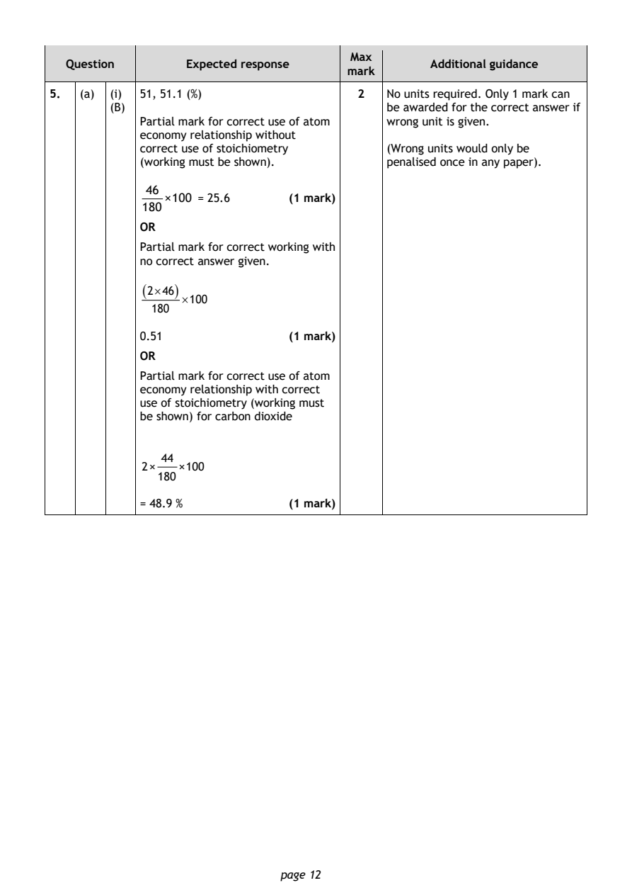
Selectable page text
Max
Question Expected response Additional guidance
mark
5. (a) (i) 51, 51.1 (%) 2 No units required. Only 1 mark can
(B) be awarded for the correct answer if
Partial mark for correct use of atom wrong unit is given.
economy relationship without
correct use of stoichiometry (Wrong units would only be
(working must be shown). penalised once in any paper).
46
×100 = 25.6 (1 mark)
180
OR
Partial mark for correct working with
no correct answer given.
( 2 × 46 )
×100
180
0.51 (1 mark)
OR
Partial mark for correct use of atom
economy relationship with correct
use of stoichiometry (working must
be shown) for carbon dioxide
44
2× ×100
180
= 48.9 % (1 mark)
page 12PDF page 13
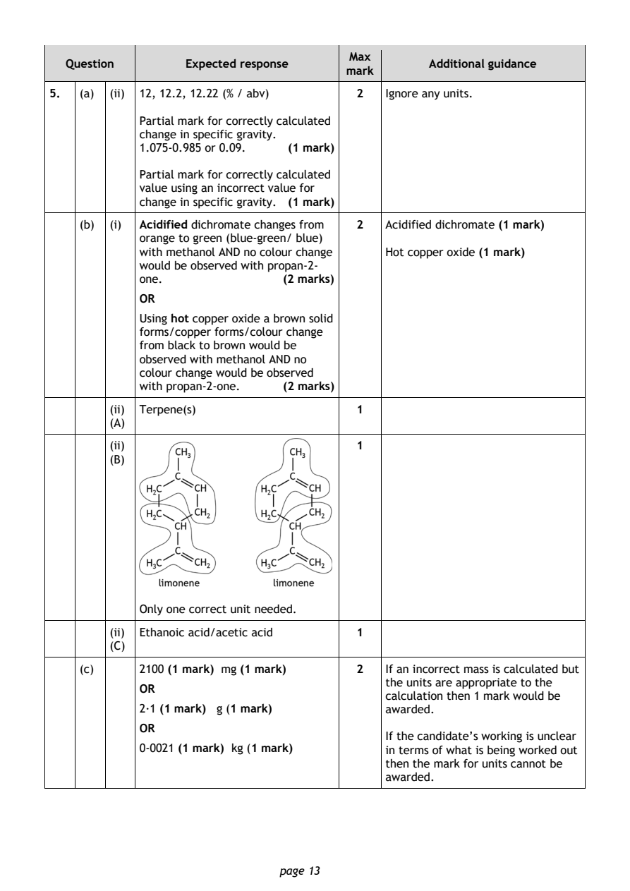
Selectable page text
Max
Question Expected response Additional guidance
mark
5. (a) (ii) 12, 12.2, 12.22 (% / abv) 2 Ignore any units.
Partial mark for correctly calculated
change in specific gravity.
1.075-0.985 or 0.09. (1 mark)
Partial mark for correctly calculated
value using an incorrect value for
change in specific gravity. (1 mark)
(b) (i) Acidified dichromate changes from 2 Acidified dichromate (1 mark)
orange to green (blue-green/ blue)
with methanol AND no colour change Hot copper oxide (1 mark)
would be observed with propan-2-
one. (2 marks)
OR
Using hot copper oxide a brown solid
forms/copper forms/colour change
from black to brown would be
observed with methanol AND no
colour change would be observed
with propan-2-one. (2 marks)
(ii) Terpene(s) 1
(A)
(ii) 1
(B)
Only one correct unit needed.
(ii) Ethanoic acid/acetic acid 1
(C)
(c) 2100 (1 mark) mg (1 mark) 2 If an incorrect mass is calculated but
the units are appropriate to the
OR
calculation then 1 mark would be
2·1 (1 mark) g (1 mark) awarded.
OR
If the candidate’s working is unclear
0-0021 (1 mark) kg (1 mark) in terms of what is being worked out
then the mark for units cannot be
awarded.
page 13PDF page 14
Paper 2, Question 6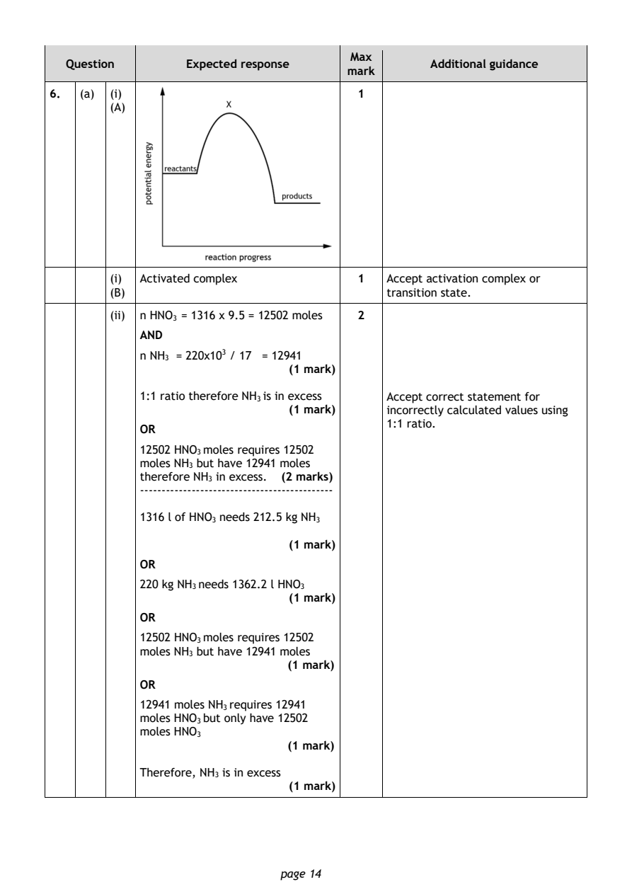
Selectable page text
Max
Question Expected response Additional guidance
mark
6. (a) (i) 1
(A)
(i) Activated complex 1 Accept activation complex or
(B) transition state.
(ii) n HNO₃ = 1316 x 9.5 = 12502 moles 2
AND
n NH₃ = 220x10³ / 17 = 12941
(1 mark)
1:1 ratio therefore NH₃is in excess Accept correct statement for
(1 mark) incorrectly calculated values using
1:1 ratio.
OR
12502 HNO₃ moles requires 12502
moles NH₃ but have 12941 moles
therefore NH₃ in excess. (2 marks)
---------------------------------------------
1316 l of HNO₃ needs 212.5 kg NH₃
(1 mark)
OR
220 kg NH₃needs 1362.2 l HNO₃
(1 mark)
OR
12502 HNO₃moles requires 12502
moles NH₃ but have 12941 moles
(1 mark)
OR
12941 moles NH₃requires 12941
moles HNO₃but only have 12502
moles HNO₃
(1 mark)
Therefore, NH₃ is in excess
(1 mark)
page 14PDF page 15
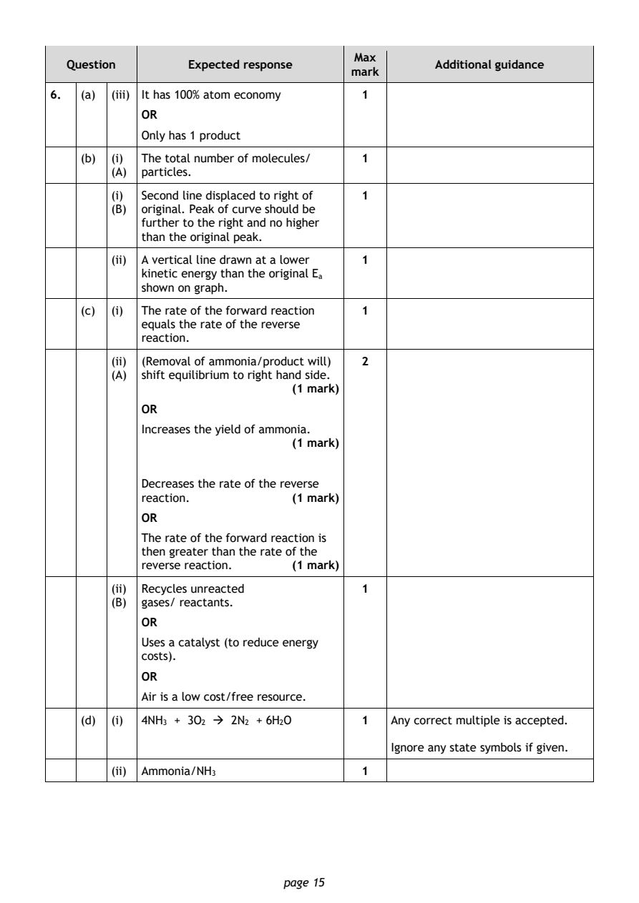
Selectable page text
Max
Question Expected response Additional guidance
mark
6. (a) (iii) It has 100% atom economy 1
OR
Only has 1 product
(b) (i) The total number of molecules/ 1
(A) particles.
(i) Second line displaced to right of 1
(B) original. Peak of curve should be
further to the right and no higher
than the original peak.
(ii) A vertical line drawn at a lower 1
kinetic energy than the original E
a
shown on graph.
(c) (i) The rate of the forward reaction 1
equals the rate of the reverse
reaction.
(ii) (Removal of ammonia/product will) 2
(A) shift equilibrium to right hand side.
(1 mark)
OR
Increases the yield of ammonia.
(1 mark)
Decreases the rate of the reverse
reaction. (1 mark)
OR
The rate of the forward reaction is
then greater than the rate of the
reverse reaction. (1 mark)
(ii) Recycles unreacted 1
(B) gases/ reactants.
OR
Uses a catalyst (to reduce energy
costs).
OR
Air is a low cost/free resource.
(d) (i) 4NH₃ + 3O₂ 2N₂ + 6H₂O 1 Any correct multiple is accepted.
Ignore any state symbols if given.
(ii) Ammonia/NH₃ 1
page 15PDF page 16
Paper 2, Question 7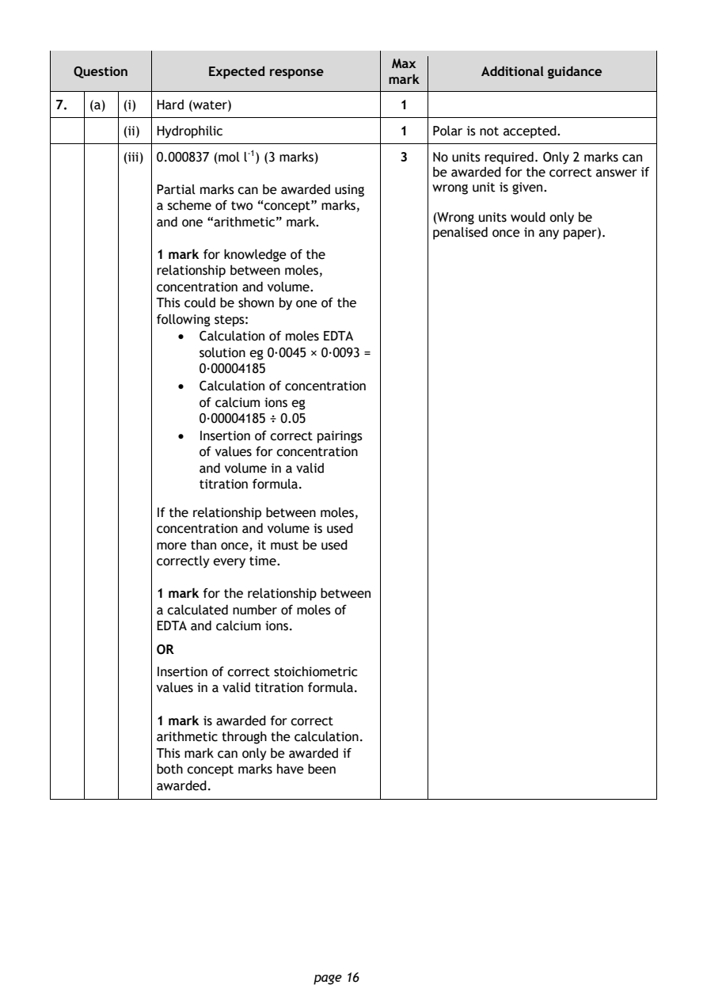
Selectable page text
Max
Question Expected response Additional guidance
mark
7. (a) (i) Hard (water) 1
(ii) Hydrophilic 1 Polar is not accepted.
(iii) 0.000837 (mol l⁻¹) (3 marks) 3 No units required. Only 2 marks can
be awarded for the correct answer if
Partial marks can be awarded using wrong unit is given.
a scheme of two “concept” marks,
(Wrong units would only be
and one “arithmetic” mark.
penalised once in any paper).
1 mark for knowledge of the
relationship between moles,
concentration and volume.
This could be shown by one of the
following steps:
• Calculation of moles EDTA
solution eg 0·0045 × 0·0093 =
0·00004185
• Calculation of concentration
of calcium ions eg
0·00004185 ÷ 0.05
• Insertion of correct pairings
of values for concentration
and volume in a valid
titration formula.
If the relationship between moles,
concentration and volume is used
more than once, it must be used
correctly every time.
1 mark for the relationship between
a calculated number of moles of
EDTA and calcium ions.
OR
Insertion of correct stoichiometric
values in a valid titration formula.
1 mark is awarded for correct
arithmetic through the calculation.
This mark can only be awarded if
both concept marks have been
awarded.
page 16PDF page 17
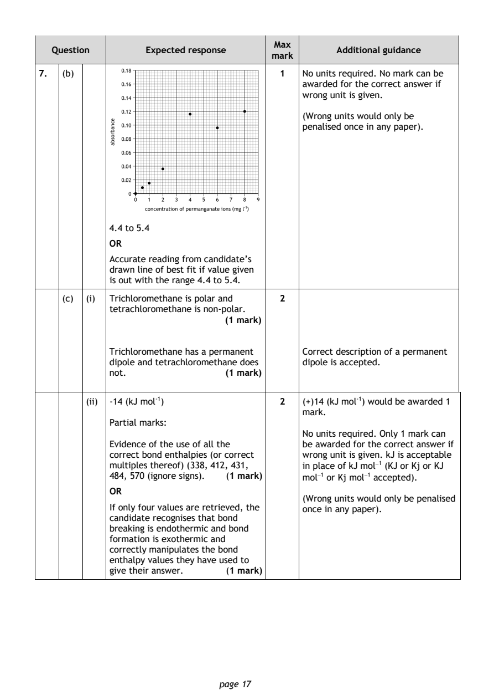
Selectable page text
Max
Question Expected response Additional guidance
mark
7. (b) 1 No units required. No mark can be
awarded for the correct answer if
wrong unit is given.
(Wrong units would only be
penalised once in any paper).
4.4 to 5.4
OR
Accurate reading from candidate’s
drawn line of best fit if value given
is out with the range 4.4 to 5.4.
(c) (i) Trichloromethane is polar and 2
tetrachloromethane is non-polar.
(1 mark)
Trichloromethane has a permanent Correct description of a permanent
dipole and tetrachloromethane does dipole is accepted.
not. (1 mark)
(ii) -14 (kJ mol⁻¹) 2 (+)14 (kJ mol⁻¹) would be awarded 1
mark.
Partial marks:
No units required. Only 1 mark can
Evidence of the use of all the be awarded for the correct answer if
correct bond enthalpies (or correct wrong unit is given. kJ is acceptable
multiples thereof) (338, 412, 431, in place of kJ mol⁻¹ (KJ or Kj or KJ
484, 570 (ignore signs). (1 mark) mol⁻¹ or Kj mol⁻¹ accepted).
OR
(Wrong units would only be penalised
If only four values are retrieved, the once in any paper).
candidate recognises that bond
breaking is endothermic and bond
formation is exothermic and
correctly manipulates the bond
enthalpy values they have used to
give their answer. (1 mark)
page 17PDF page 18
Paper 2, Question 8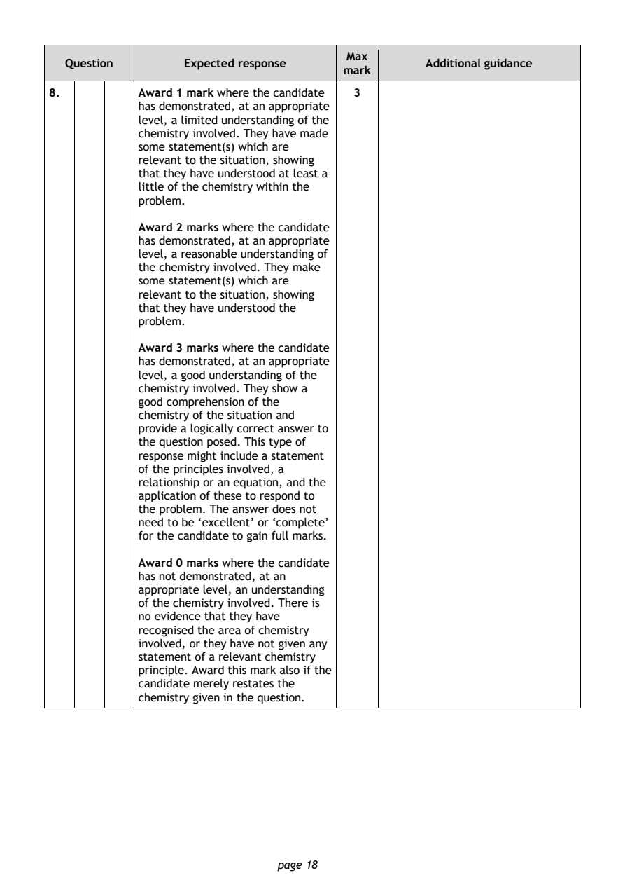
Selectable page text
Max
Question Expected response Additional guidance
mark
8. Award 1 mark where the candidate 3
has demonstrated, at an appropriate
level, a limited understanding of the
chemistry involved. They have made
some statement(s) which are
relevant to the situation, showing
that they have understood at least a
little of the chemistry within the
problem.
Award 2 marks where the candidate
has demonstrated, at an appropriate
level, a reasonable understanding of
the chemistry involved. They make
some statement(s) which are
relevant to the situation, showing
that they have understood the
problem.
Award 3 marks where the candidate
has demonstrated, at an appropriate
level, a good understanding of the
chemistry involved. They show a
good comprehension of the
chemistry of the situation and
provide a logically correct answer to
the question posed. This type of
response might include a statement
of the principles involved, a
relationship or an equation, and the
application of these to respond to
the problem. The answer does not
need to be ‘excellent’ or ‘complete’
for the candidate to gain full marks.
Award 0 marks where the candidate
has not demonstrated, at an
appropriate level, an understanding
of the chemistry involved. There is
no evidence that they have
recognised the area of chemistry
involved, or they have not given any
statement of a relevant chemistry
principle. Award this mark also if the
candidate merely restates the
chemistry given in the question.
page 18PDF page 19
Paper 2, Question 9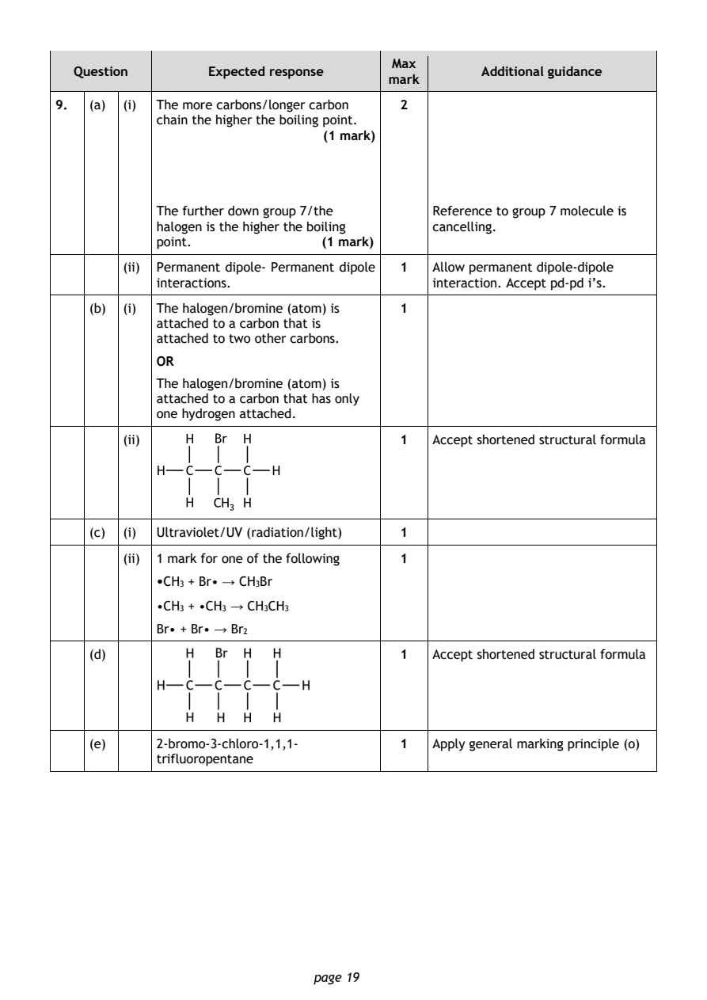
Selectable page text
Max
Question Expected response Additional guidance
mark
9. (a) (i) The more carbons/longer carbon 2
chain the higher the boiling point.
(1 mark)
The further down group 7/the Reference to group 7 molecule is
halogen is the higher the boiling cancelling.
point. (1 mark)
(ii) Permanent dipole- Permanent dipole 1 Allow permanent dipole-dipole
interactions. interaction. Accept pd-pd i’s.
(b) (i) The halogen/bromine (atom) is 1
attached to a carbon that is
attached to two other carbons.
OR
The halogen/bromine (atom) is
attached to a carbon that has only
one hydrogen attached.
(ii) 1 Accept shortened structural formula
(c) (i) Ultraviolet/UV (radiation/light) 1
(ii) 1 mark for one of the following 1
•CH₃ + Br• → CH₃Br
•CH₃ + •CH₃ → CH₃CH₃
Br• + Br• → Br₂
(d) 1 Accept shortened structural formula
(e) 2-bromo-3-chloro-1,1,1- 1 Apply general marking principle (o)
trifluoropentane
page 19PDF page 20
Paper 2, Question 10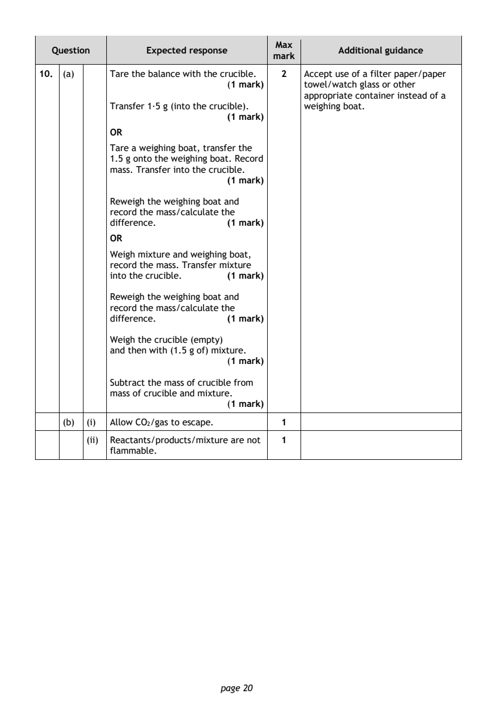
Selectable page text
Max
Question Expected response Additional guidance
mark
10. (a) Tare the balance with the crucible. 2 Accept use of a filter paper/paper
(1 mark) towel/watch glass or other
appropriate container instead of a
Transfer 1·5 g (into the crucible). weighing boat.
(1 mark)
OR
Tare a weighing boat, transfer the
1.5 g onto the weighing boat. Record
mass. Transfer into the crucible.
(1 mark)
Reweigh the weighing boat and
record the mass/calculate the
difference. (1 mark)
OR
Weigh mixture and weighing boat,
record the mass. Transfer mixture
into the crucible. (1 mark)
Reweigh the weighing boat and
record the mass/calculate the
difference. (1 mark)
Weigh the crucible (empty)
and then with (1.5 g of) mixture.
(1 mark)
Subtract the mass of crucible from
mass of crucible and mixture.
(1 mark)
(b) (i) Allow CO₂/gas to escape. 1
(ii) Reactants/products/mixture are not 1
flammable.
page 20PDF page 21
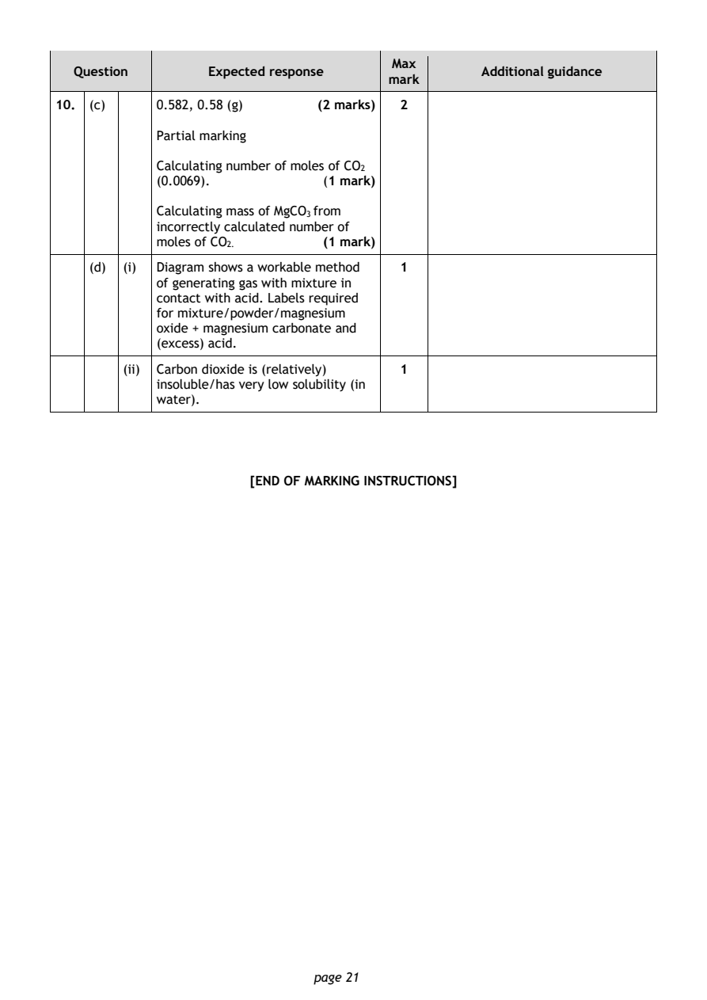
Selectable page text
Max
Question Expected response Additional guidance
mark
10. (c) 0.582, 0.58 (g) (2 marks) 2
Partial marking
Calculating number of moles of CO₂
(0.0069). (1 mark)
Calculating mass of MgCO₃from
incorrectly calculated number of
moles of CO₂ (1 mark)
.
(d) (i) Diagram shows a workable method 1
of generating gas with mixture in
contact with acid. Labels required
for mixture/powder/magnesium
oxide + magnesium carbonate and
(excess) acid.
(ii) Carbon dioxide is (relatively) 1
insoluble/has very low solubility (in
water).
[END OF MARKING INSTRUCTIONS]
page 21